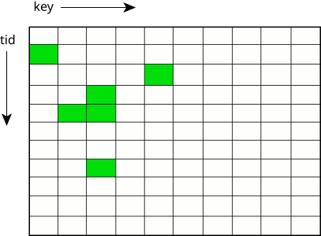

Although threads within a process share everything within
the process's address space, each thread still has some
private
data. Some of this private data
is protected within the kernel (e.g., the tid or
thread ID), while other private data resides unprotected in
the process's address space (e.g., each thread has a stack
for its own use).
Some of the more noteworthy thread-private resources are:
Thread scheduling,later in this chapter.
thread local storage(TLS). The TLS is used to store
per-threadinformation (such as tid, pid, stack base, errno, and thread-specific key/data bindings). The TLS doesn't need to be accessed directly by a user application. A thread can have user-defined data associated with a thread-specific data key.
Thread-specific data, implemented in the pthread library and stored in the TLS, provides a mechanism for associating a process global integer key with a unique per-thread data value. To use thread-specific data, you first create a new key and then bind a unique data value to the key (per thread). The data value may, for example, be an integer or a pointer to a dynamically allocated data structure. Subsequently, the key can return the bound data value per thread.
A typical application of thread-specific data is for a thread-safe function that needs to maintain a context for each calling thread.

You use the following functions to create and manipulate this data:
| Function | Description |
|---|---|
| pthread_key_create() | Create a data key with destructor function |
| pthread_key_delete() | Destroy a data key |
| pthread_setspecific() | Bind a data value to a data key |
| pthread_getspecific() | Return the data value bound to a data key |